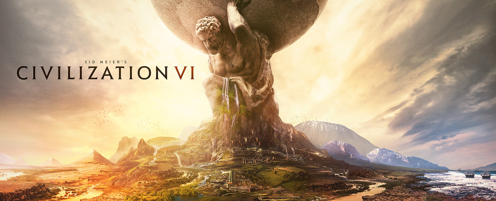

Civ 6 is a lot of fun. I do strongly prefer larger maps to avoid feeling boxed in, as unlike previous iterations, cities require additional tiles to place districts and wonders around them. There are multiple types of districts aside from the city center: aqueducts, canals, neighborhoods, preserves, entertainment complexes and parks, campuses for science, theatre squares for culture, harbors, commercial hubs, industrial zones, aerodromes, government plazas, diplomatic quarters, holy sites for faith, spaceports, and encampments for military units. Some civilizations have unique variants of a district, which may have different requirements for placement of some or all of them depending upon terrain types and locations. All districts except for neighborhoods and canals can only be built once in a city. The government plaza and diplomatic quarter can additionally only be built in one city by a player at a time, unlike the other districts. City-states can also be in the game, providing bonuses, some unique, for currying favor with them. Another feature is the ability to assign Governors to cities to maintain loyalty so that cities do not rebel or defect, and to gain various other benefits that boost productivity or revenue in a city.
There are also plenty of community modifications (mods) for the game that add variety, interest, and replay-ability. The game has many leaders you can play as; some civilizations have two or (rarely) more leaders, plus there are also different versions of the same leader. For example, Harald Hardrada and Suleiman have two variants each, and Eleanor of Aquitaine can lead multiple civilizations (England and France). More leaders, civilizations, and units can also be added through mods. I particularly like the Valletta city-state, as it provides a bonus (particularly useful later in the game) to purchase buildings with faith. Likewise, I particularly like the mod that adds the Notre-Dame Cathedral of Saigon Wonder, which allows faith to be used in cities with an assigned governor to purchase districts, which is incredibly convenient.
In conclusion, I really enjoy the game, and it is a good way to spend time while thinking strategically to achieve goals.
Note: I did notice that the official Steam Store page link: https://store.steampowered.com/app/289070/Sid_Meiers_Civilization_VI/ for the game uses a transparent background in a way that actually looks nice.